Face detection is a subproblem of object recognition, and as such, any face-detection algorithm makes a binary decision as to whether a certain set of pixels does or does not qualify as an instance of the object in question–in this case a face. There are of course a number of well-known implementations that recognize objects in general and faces in particular, like Viola-Jones (2001), but for this project a sliding-window implementation of the type described in Dalal-Triggs (2005) is used. The process of detecting faces using the sliding-window implementation is broken down into several stages:
Each of the 36x36 images provided as positive examples of faces is converted to HoG features by means of a call to vl_hog(). The output is then resized into a row vector, and appended to the matrix of positive images such that every row corresponds to a positive example of a face. The implementation is shown below.
image_files = dir( fullfile( train_path_pos, '*.jpg') ); %Caltech Faces stored as .jpg
num_images = length(image_files);
features_pos = [];
for i=1:num_images
image = imread(strcat(image_files(i).folder, '\', image_files(i).name));
hog = vl_hog(single(image), feature_params.hog_cell_size);
row = reshape(hog, 1, (feature_params.template_size / feature_params.hog_cell_size)^2 * 31);
features_pos = [features_pos; row];
end
Each of the images provided as negative examples of faces is first recolorized to greyscale, if the original image was not already greyscale. Given that we wish to mine an arbitrary number of negative samples, and have been provided with another arbitrary number of negative images from which to mine them, we calculate the number of 36x36 patches to be taken as num_samples / num_images. Taking that many patches from random pixel locations on each image, we convert each patch to HoG features using the same call to vl_hog() as in Phase 1, then resize the HoG features into a row vector and append to the negative image matrix in the same way. The implementation is shown below.
image_files = dir( fullfile( non_face_scn_path, '*.jpg' ));
num_images = length(image_files);
features_neg = [];
num_patches = int64(num_samples / num_images);
for i=1:num_images
image = imread(strcat(image_files(i).folder, '\', image_files(i).name));
if (size(size(image)) > 2)
image = rgb2gray(image);
end
for j=1:num_patches
rx = randi(size(image, 2) - 36);
ry = randi(size(image, 1) - 36);
patch = image(ry:ry+36, rx:rx+36);
hog = vl_hog(single(patch), feature_params.hog_cell_size);
row = reshape(hog, 1, (feature_params.template_size / feature_params.hog_cell_size)^2 * 31);
features_neg = [features_neg; row];
end
end
gap = num_samples - size(features_neg, 1);
for k=1:gap
rimg = randi(size(num_images));
image = imread(strcat(image_files(rimg).folder, '\', image_files(rimg).name));
if (size(size(image)) > 2)
image = rgb2gray(image);
end
rx = randi(size(image, 1) - 36);
ry = randi(size(image, 2) - 36);
patch = image(rx:rx+36, ry:ry+36);
hog = vl_hog(single(patch), feature_params.hog_cell_size);
row = reshape(hog, 1, (feature_params.template_size / feature_params.hog_cell_size)^2 * 31);
features_neg = [features_neg; row];
end
The classifier that actually distinguishes the images which are faces from those which are not is a linear SVM in this case. The process of training it is a straightforward matter of labelling each positive image '1' and each negative image '-1' before calling vl_svmtrain() with an experimentally determined lambda value. The implementation is shown below.
features = [features_pos; features_neg];
pos = ones([size(features_pos, 1), 1]);
neg = zeros([size(features_neg, 1), 1]);
neg(neg==0) = -1;
nums = [pos; neg];
lambda = 0.0001;
[w, b] = vl_svmtrain(features', nums, lambda);
After being trained, the face detector must be tested using unlabelled images. Every test image is converted to greyscale if not already, then random 36x36 patches are sampled from each image, similar to the procedure in Phase 2. However, this time random patches are taken from ten different versions of the each image, scaled from 10% of the original size up to 100%. Each patch is then converted to HoG features and fed through the classifier. The SVM's confidence score is compared to an experimentally determined threshold, and if the score is greater, the corresponding image is classified as a face and appended to the output list. After all scaled versions of a particular image have been classified, non-maximum suppression is run on those images to remove duplicates. The implementation is shown below (minus initial code).
cur_bboxes = [];
cur_confidences = [];
cur_image_ids = cell(0,1);
threshold = 0.4;
num_scales = 10;
for j=1:num_scales
scale_factor = (1 / num_scales) * j;
scaled_image = imresize(img, scale_factor);
if (size(scaled_image, 1) < 36 || size(scaled_image, 2) < 36)
continue;
end
for y=1:6:size(scaled_image, 1) - 36
for x=1:6:size(scaled_image, 2) - 36
patch = scaled_image(y:y+36, x:x+36);
hog = vl_hog(single(patch), feature_params.hog_cell_size);
row = reshape(hog, 1, (feature_params.template_size / feature_params.hog_cell_size)^2 * 31);
score = sum(w' .* row) + b;
if score > threshold
cur_bboxes = [cur_bboxes; floor(x / scale_factor), floor(y / scale_factor), floor((x + 36) / scale_factor), floor((y + 36) / scale_factor)];
cur_confidences = [cur_confidences; score];
cur_image_ids = [cur_image_ids; test_scenes(i).name];
end
end
end
end
| 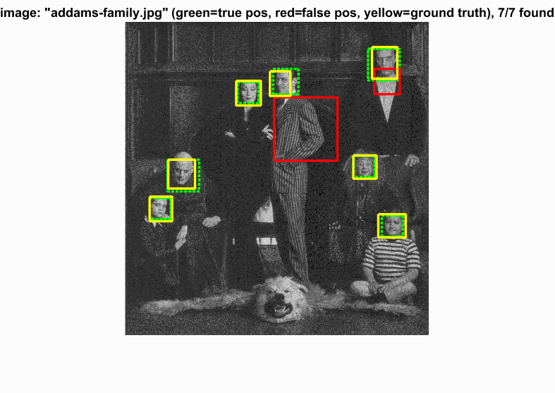 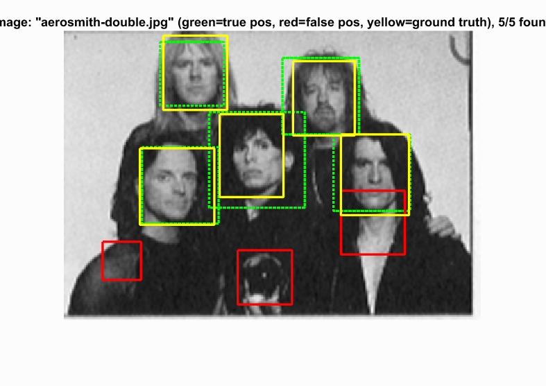 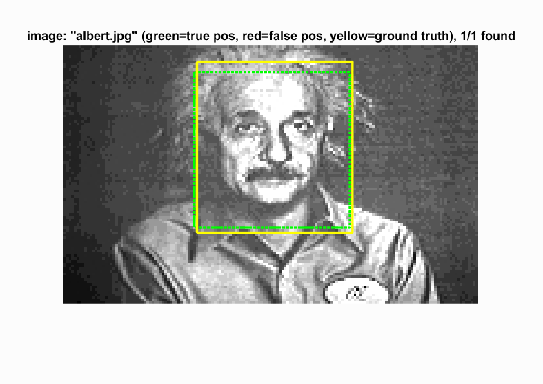 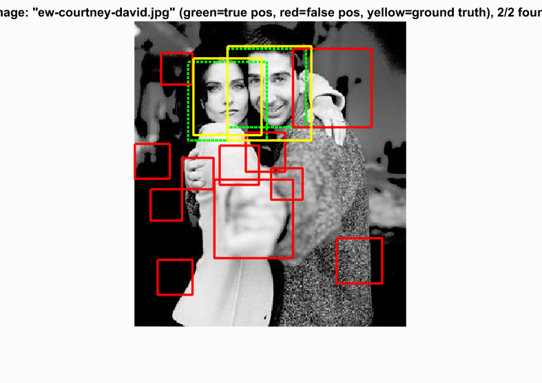 |
| 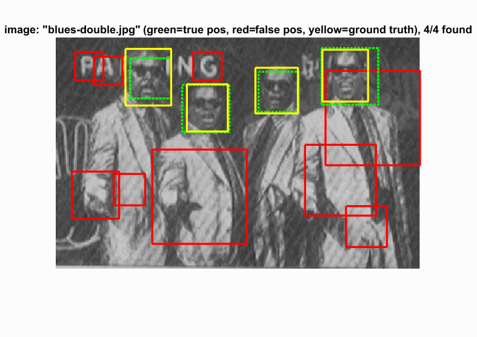 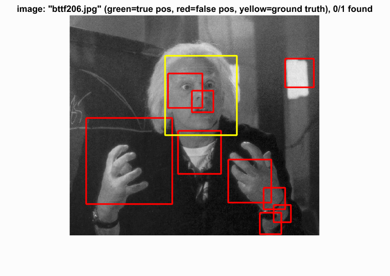 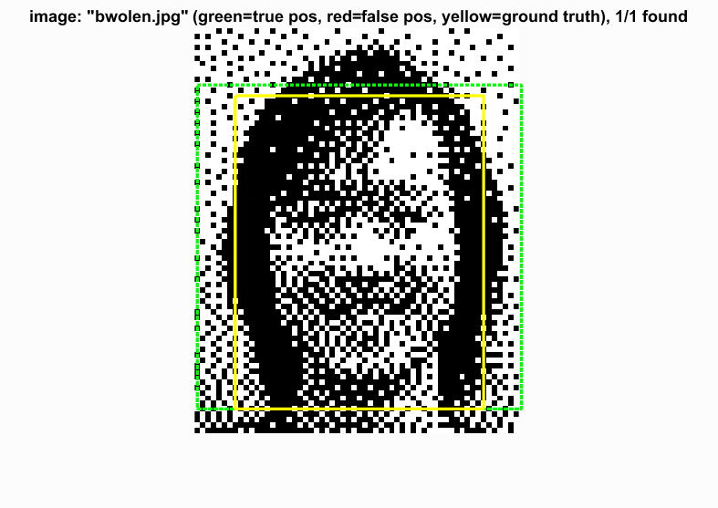 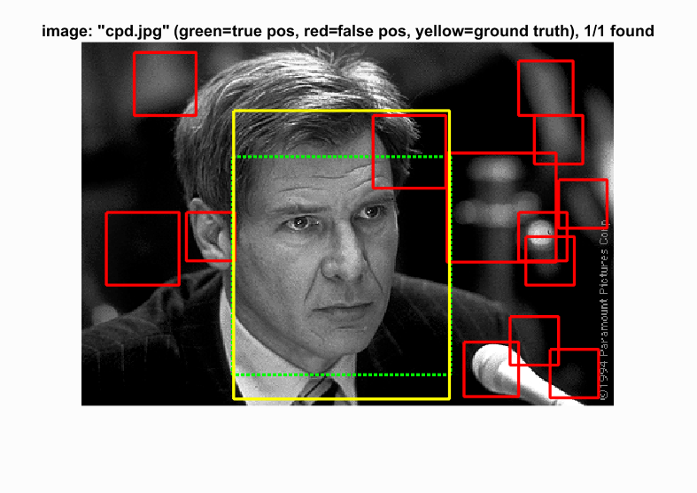 |
Face template HoG visualization
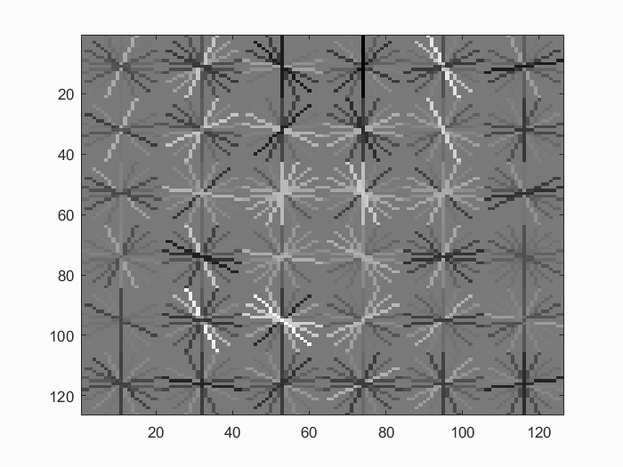
Precision Recall curve
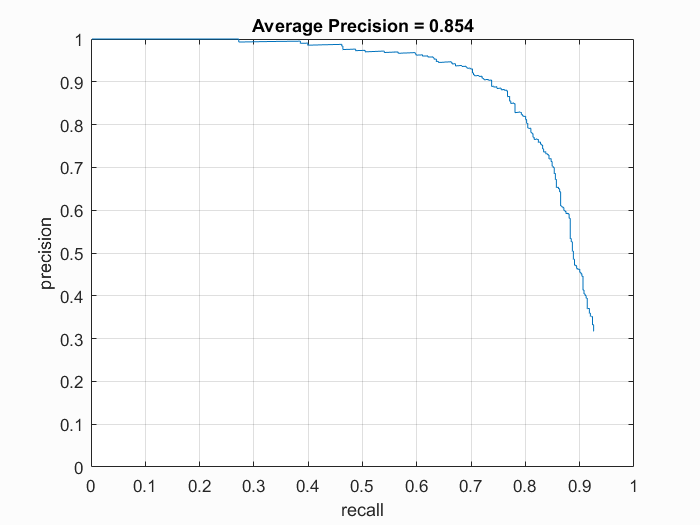
Example of detection on the test set
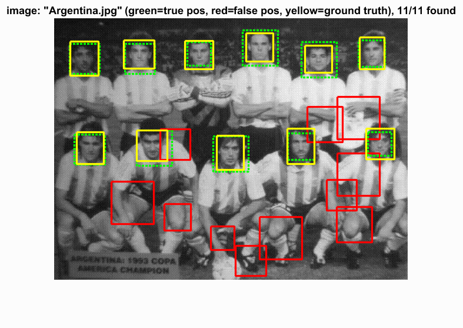